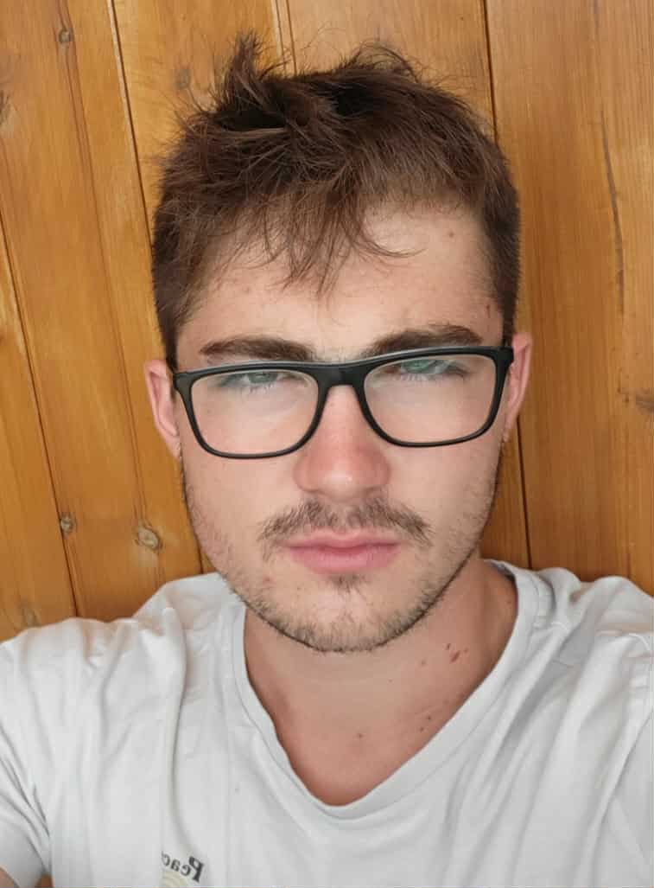

Adrián Benedik
Adrián má skúsenosti s viacerými programovacími jazykmi; v poslednom období sa
venuje C#, JavaScriptu a CSS. Má tiež skúsenosti s PHP a frameworkom Laravel, ktoré
nadobudol na predmete Webové technológie. Svoje schopnosti ďalej rozvíja v
spolupráci s firmou, s ktorou vypracoval bakalársku prácu, pre túto spoločnosť vytvoril
webovú aplikáciu na zadávanie protokolov. Je pripravený učiť sa nové veci a riadi sa
mottom: „Neexistujú problémy, iba výzvy.“
Kontakt:
xbenedik@stuba.sk
Ján Dodok
Ján sa počas školy venoval rôznym oblastiam informatiky, od nízkoúrovňovej práce s
operačnými systémami až po vývoj webových aplikácií. Najčastejšie používal
programovacie jazyky C++, Java a Python. Má dobré znalosti webových technológií
(HTML, CSS, JavaScript, PHP), praktické skúsenosti s frameworkom Laravel a použitím
databáz MongoDB a PostgreSQL. Vo svojej bakalárskej práci sa zameral na simulácie v
prostredí ns-3, konkrétne na modelovanie mobility ľudí, kde si mimo odborných
skúseností osvojil prácu s Linux prostredím.
Kontakt:
xdodok@stuba.sk
Boric Čižmár
Boris rád objavuje rôzne sféry vývoja aplikácii a webových aplikácii. Skúsenosti nabral pri
svojej bakalárskej práci, kvôli ktorej navrhol a vytvoril kompletnú webovú aplikáciu s
použitím Spring Bootu v kombinácií s Vue.js frameworkom. Okrem toho sa sústredí na
nadobúdanie nových vedomostí hlavne v oblasti backendu, návrhu riešení a
databáz. Počas štúdia sa venoval témam spojených s umelou inteligenciou, prácou v
tíme a programovaním na rôznych úrovniach programovacích jazykov.
Kontakt:
xcizmarb@stuba.sk

Adrián Lapos
Adrian má skúsenosti s programovacími jazykmi Java, Python, PHP a
frontendovým frameworkom React. Zameriava sa najmä na enterprise aplikácie.
Svoje schopnosti využil napríklad pri bakalárskej práci, keď vytvoril webovú
aplikáciu na hodnotenie a vyhľadávanie reštaurácií. Zaujíma sa aj o DevOps, kde
sa postupne snaží učiť nové nástroje a technológie.
Kontakt:
xbenedik@stuba.sk
Libor Poracký
Libor sa počas štúdia venoval najmä Pythonu, PHP, JavaScriptu a práci s databázami.
Nadobudol znalosti z oblasti webových technológií, počítačového videnia a umelej
inteligencie. Svoje schopnosti ďalej rozvíjal vo svojej bakalárskej práci, v ktorej navrhol a
implementoval systém strojového videnia na kontrolu správneho balenia produktov.
Kontakt:
xporacky@stuba.sk